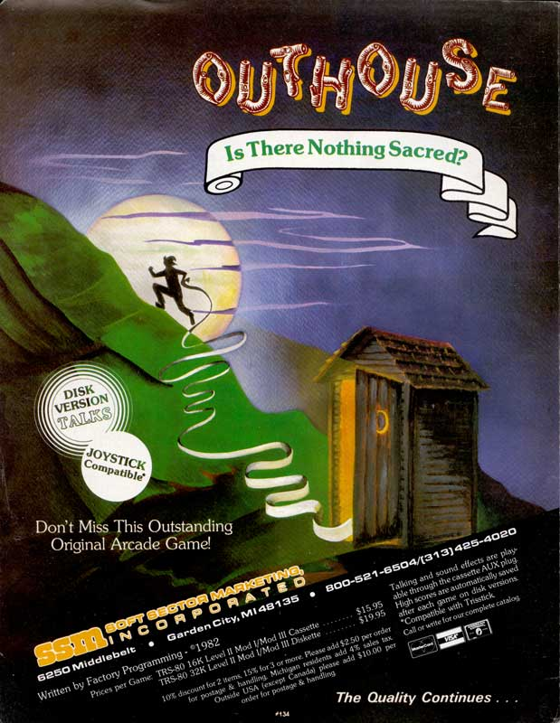

WELCOME
Greetings you absolute weirdo. My name is Jim McGinley and I played these games 42 years ago.
Click a game, watch the video,
then click a level to play right now!
A TRS-80 Model III emulated in your browser? Truly it's 2024!
Most games start boring so I recommend the higher levels.
I love these games, and now you'll love them - all 16 kilobytes.
You can reload your game (
Ctrl+L) and save (
Ctrl+S) - 3 slots per game.
You can copy a game (
Ctrl+C), paste it into an e-mail (
Ctrl+V) and send it to a friend. They can paste it into this site and continue
your game!
Should you reach higher levels or find interesting moments e-mail them to me (jim@bigpants.ca) for main menu consideration.
Consider buying
Endlight, our chaotic action game with a TRS-80 heart.
- NEWS
| July 7, 2024 | Added Challenges |
| July 6, 2024 | Added Penetrator |
| July 2, 2024 | Added Scarfman |
| July 1, 2024 | Added Outhouse, Defense Command, Crazy Painter |
| July 1, 2024 | Released website v1.0 |
- ABOUT
"The Games I Used to Play" showcases the games I used to play on my TRS-80 42 years ago.
Every week I'll be releasing a TRS-80 game and an accompanying video for those of you with no time to play.
Despite the gap, I can play these games better than ever.
This is only possible thanks to
- The original trs80gp - A TRS-80 Model 1,2,3,4,12,16,6000,MC-10,Color Computer,DT-1,Videotex Emulator created by George Phillips
- The TRS-80 Model III Emulator in Javascript created by Peter Phillips (ported the above)
- The orginal game developers (many have officially released their games to the public domain)
- People preserving the original games Welcome To Ira Goldklang's TRS-80 Revived Site, The Big List of TRS-80 Software
What do I bring to the table?
My looks.
- CONTROLS
Ctrl+P
Pause
the washroom calls
Ctrl+S
Save
save permanently, you have 3 slots per game
Ctrl+L
Load
load latest save
Ctrl+C
Copy
copy game to memory
Ctrl+V
Paste
restore copy, preserve in text document,
e-mail to friend, share on website
- CHALLENGES
J. Weaver Jr. - 1982
| Best Moments | 8:05 9:30 11:00 |
| Distributed By | Soft Sector Marketing, Inc. |
| Playable Area | 128 x 39 |
Outhouse is one of the greatest games ever made.
The TRS-80's answer to
Robotron (the greatest game ever made).
A perfect marriage of theme and gameplay, which is a rare thing indeed.
There's nothing you can do to make Outhouse better.
The limitations of the TRS-80 work in the games favour, rather than against it.
Outhouse must be played with a keyboard. i.e. switching directions with a joystick/thumbstick would be problematic at higher levels.
In the video I attempt to beat Level 18
without smart bombs (the refuge of the weak).
No human has ever seen Level 18, so consider yourself lucky.
While I'm not using any cheats, I am constantly saving and reloading.
Consider buying
Endlight, our chaotic action game with TRS-80 guts.
STUFF

Bill Hogue and Jeff Konyu - 1982
| Best Moments | 3:53 7:55 9:58 |
| Company | Big Five Software |
| Playable Area | 128 x 48 |
Despite the gap (and thanks to modern save & reload) I managed to reach 56,000+ points which showcases this unique classic at its absolute best. Accept no substitutes.
Defense Command was one of the later games created by legendary TRS-80 game developer Big Five Software.
Every Big Five Software game has a signature eyeball enemy - look for it.
Today we'd call Defense Command a 2nd or 3rd generation game, where the developers finally understood the hardware inside and out, and could use every trick in the book.
As far as I know, Defense Command's unique design (the bastard child of Defender and Galaga) has been completely forgotten.
Additionally, the standard Space Invaders performance trick of allowing the player only one bullet in the air at a time has been elevated here - likely unintentionaly.
If you can align multiple enemies above you, you can essentialy fire
many single shots in a row destroying enemies instantly.
This feels incredible and is essential at higher levels.
Consider buying
Endlight, our chaotic action game with TRS-80 soul.
STUFF

Robert Pappas - 1982
| Best Moments | 2:00 5:30 19:00 |
| Company | The Cornsoft Group |
| Playable Area | 128 x 45 |
Watch me paint the entire screen white, fulfilling a primal desire I still can't suppress. I finish multiple levels and showcase the criminally overlooked bonus stages.
I also try to beat Level 9 which is impossible. An action game without shooting did NOT exist in 1982, and I don't believe this design has ever been copied.
Hopefully casinos (and mobile game makers) don't watch this video.
Consider buying
Endlight, our chaotic action game that kicks TRS-80 ass.
If you modernize Crazy Painter
-
Keep the chunkiness (128 x 48). Huge pixels are necessary
-
Remove the enemies. All I want to do is paint. I don't need anything more.
If you must add enemies have them die in an explosion of paint that covers the screen helping me
(also ensure they don't spawn near player)
-
Slow player movement so brush can be easily aligned, or add a key I can hold down to "snap to grid".
Worth noting touch screen support would likely be brilliant, and render this moot
-
If you follow this advice, you'll make millions*
Spacebar Strategy Clarification
When you hit spacebar, the code checks whether the entire screen is filled.
Code loops from top left to bottom right exiting when it finds a black pixel. This is typically fast.
However, if you paint from top left to bottom right, it takes longer and longer to reach a black pixel, so holding spacebar now slows the game down.
If you remake Crazy Painter, make this official!
Note to Jim
Emergent was the word you were looking for. i.e. Crazy Painter had emergent gameplay
STUFF
-
Article: Matthew Reed writes about Crazy Painter
"I have always liked Crazy Painter because it is such a change of pace from other games"
-
Article: Creative Computing 1983 Review
"I like Crazy Painter because as the game progresses in difficulty levels, different creatures are brought into play. " so ... so ... wrong
-
Video: Crazy Painter on the CoCo
While it lacks our fabled chunkiness, the challenge stage now has a SQUEEGEE!
-
Article: Manual v1.0
"Become a "Crazy Painter" and create a masterpiece ... if you can."
"A mischievous dog, snakes and poisonous turpentine buckets force changes in your painting. In higher skill levels, "paint eaters" start chewing up your work. Suddenly, everyone's a critic."
-
PDF: Manual v2.0
"Exclusive Bonus Stage: Stop as many CRAZY PAINTER characters as possible without reaching 100." Wait... WHAT?!
* = and owe me half

Philip Oliver - 1981
| Best Moments | 5:35 7:33 |
| Company | The Cornsoft Group |
| Playable Area | 32 x 20 but you could argue 16 x 10 |
| Memory | 16KB |
Scarfman is a fast, chunky, 5 ghost Pac Man clone.
The power pellets initially last forever, which is heaven.
Eating a dot plays a sound which slightly pauses the game so you FEEL every bite.
Against all odds, they built a better beast.
The Atari 2600 Pac Man released a year later and sold millions. I never recovered.
Thanks to many reloads, I reached fabled Skill Level 9. The monsters are much smarter, and the power pellets don't last long.
At this point you're using power pellets exclusively to eat dots (avoid eating monsters, they intefere too quickly).
Scarfman does not appear to go beyond Skill Level 9, which might be a good thing.
I no longer hear the munching sound.
When I was a child, I wondered where the scarf was.
As an adult, I still wonder.
Consider buying
Endlight, our chaotic action game with TRS-80 street cred.
STUFF
-
Article: 1982 Review of Scarfman by Dan Eckblaw in "Space Gamer" (Issue 54, Page 32)
"I’ve found that this game loses its novelty after a few WEEKS and will spend the rest of its days sitting on a shelf" even in those early days, gamers were a demanding lot :)
-
Article: Matthew Reed reviews Scarfman
"I think it is the best of the Pac-Man games for the TRS-80."
-
Article: Manual v1
"Will you SCARF your way to victory? Can you avoid the MONSTERS that guard the maze?"
"Nine progressive skill levels make the game more difficult as you get better. Do you have what it takes to reach skill level 9?"
I had what it takes!
-
Article: Manual v2
"Our experience with this game is that it is habit forming. It is not unusual to sit at the game for over 2 hours at a time.
The Indianapolis (and world) record is currently at 200,920 points. A good game is 75,000 points. You get a bonus man at 20,000 points which makes the game last longer."

Philip Case - 1982
| Best Moments | 2:21 6:39 7:24 |
| Company | Melbourne House |
| Playfield | 128 x 48 |
Important
We don't preserve anything on saved to disk.
On the Penetrator menu, Saving and Loading custom levels doesn't work.
However, by Saving
Ctrl+S you effectively save the level you're working on.
You can also Copy
Ctrl+C and Paste
Ctrl+V your level locally.
Put them all in one text file!
Controls
| Break + Clear | Skip Title Screen Drawing |
| Break + Clear (again) | Skip Title Screen Siren |
| Arrow Keys | Move |
| X >or< Right Arrow | Moves and Shoots - rapidly press to shoot, hold to move |
| Z >or< Spacebar | Drop Bombs |
(from the manual) "You must penetrate each of these defense rings, and blow up the illegal neutron bonb store."
... and thus the name "Penetrator"
Penetrator is an amazing clone of Konami's far-less-chunky but nowhere-near-as-fun
Scramble.
Right arrow shoots AND moves player right - a bizarre scheme that somehow works, and has never been seen again.
Worth noting that shooting is unreliable, unsure if that's exasperated by the emulator.
The 3D rotation animation of the enemy radar stations remains immaculate.
You can also edit the landscapes (did someone say modding)!
To save memory (they had 16KB total to work with), the detailed landscape is stored as 2 values (top and bottom) for each x co-ordinate.
Height differences are connected when rendered.
A genius approach, and perhaps the first game to use heightmaps.
Penetrator also features the
greatest explosion in TRS-80 history.
Consider buying
Endlight, our chaotic action game with TRS-80 breasts.
Tips
- (from the 1982 manual!) "If you stay too far to the left of your screen or too far to the right you will not be able to use that extra thrust or brake to avoid enemy missiles. Keep your fighter in such a position as to maintain maximuim flexibility."
- Always bomb - there's no drawback. Keep shooting unless you're in tight spaces (due to same key design, shooting also moves you)
- All bombs follow the exact same arc, player movement has no impact. Learn that arc and aiming is easy - even from up high. Physics engines - just say no.
- Every missed radar adds to your GTA danger level, then missiles start moving horizontally to get you (it's somewhat disturbing). Danger level doesn't reset until you destroy the "neutron bomb store".
STUFF
-
Manual
This documentation is indeed fantastic, and includes a "strategies" section that's actually helpful:
"In Stage Four, the enemy paratroopers will be hiding and waiting in ambush. Try to lure then out of their hiding place and then either shoot then while braking, or thrust quickly while going up to fly over them."